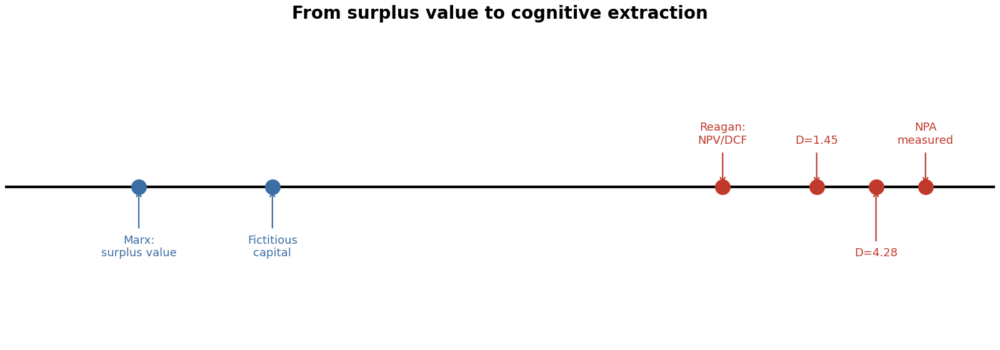
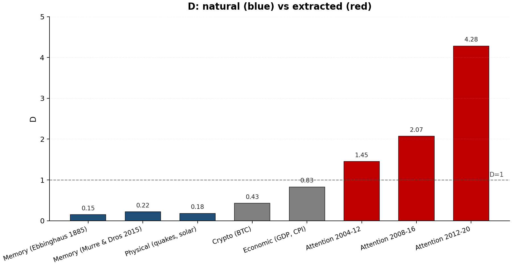
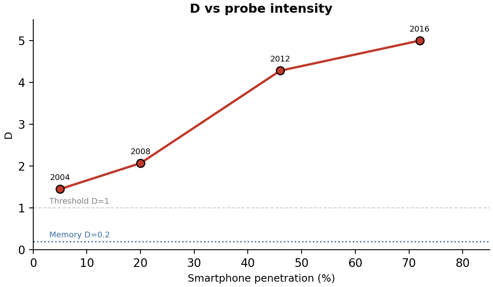

| Stage | What is stolen | When | Instrument | Visibility |
|---|---|---|---|---|
| Marx (1867) | Labor (hours) | In the present | Wage relation | Visible |
| Reaganomics (1980s) | Future labor | From the future | NPV / DCF | Less visible |
| NPA (2010s) | Coherence (years) | From the future mind | Probing algorithms | Invisible |

From surplus value to cognitive extraction: 160 years of theory
In 1867, Karl Marx described how capitalism works. The worker produces more value than they are paid. The difference — surplus value — is the owner's profit. The theft happens here and now: the worker labors, the owner appropriates part of the result. The exploitation is visible: you can see the wage gap, measure the hours, point to the factory. There is no debt — there is unpaid labor, already performed. The substance is labor, measured in hours. The mechanism is the wage relation. The time is now.
But Marx was not naive. In Capital Vol. 3 (1894, Ch. 29-31) he described fictitious capital — financial claims on future production. Stocks, bonds, bank deposits — all of these, according to Marx, are not real capital but "tradable paper claims to wealth." He considered them a deviant form. He warned: fictitious forms grow faster than real capital and eventually dominate. He described the disease. He could not predict that within a hundred years fictitious capital would become the only form.
In the 1980s, the Reagan administration cut the top tax rate from 70% to 28%, deregulated finance, and opened the floodgates for financialization. Factories closed. Corporate raiders bought companies, fired workers, and sold assets. The success criterion shifted from producing goods to maximizing shareholder value. The instrument was NPV — net present value, a formula that takes future revenues and discounts them to today's value. The future labor of the worker becomes a number on a spreadsheet. It is appropriated before it is produced. What Marx considered a deviation became 100% of capitalism.
If Reaganomics taught capital to steal future labor, the digital economy taught it to steal future cognition. The factory was a means of production. The smartphone is a means of extraction. The assembly line was a conveyor belt. The infinite scroll is a conveyor of cognitive extraction. The raw material was labor. The raw material is now cognitive coherence — the ability to think clearly, remember, focus, hold a thought across time.
Every probe — every notification, every autoplay, every feed refresh — extracts a small portion of your future cognitive potential and converts it into present engagement. The platform appropriates engagement and sells it to advertisers. You don't pay today. You pay in cognitive decline decades later.
NPA = Net Present Attention. The cognitive analog of NPV. In NPV, future labor is discounted at rate r. In NPA, future coherence is discounted by probe frequency.
The stretched-exponential retention law is confirmed across 40+ domains — quantum circuits, climate, space weather, river flow, earthquakes, cryptocurrency, memory decay, economic indicators, air quality. In every domain, R-squared above 0.85, power-law alternatives defeated. The law has two parameters: scale (lambda-q) and stretching exponent (D).
Natural systems: D < 1 — slow, heavy-tailed decay. Coherence persists. Extracted systems: D > 1 — compressed, accelerating collapse. Coherence disintegrates. No natural system shows D above 1. D is the extraction marker.

Natural systems (blue) — D < 1. Extracted (red) — D > 1.
Gloria Mark (UC Irvine) tracked attention span for 20 years. 2004: 2.5 min. 2016: 47 sec. D grows monotonically with smartphone penetration: 0.15 → 1.45 → 4.28. The coherence cliff falls at 62% penetration (R²=0.995). The US crossed this threshold in 2016.

The richest people on Earth built their fortunes on three stages: factories (Marx), financialization (Reaganomics), cognitive extraction (NPA). For a platform with 2 billion users, each losing an average of 2 years of coherence — total extracted debt: 4 billion coherence-years. The tech billionaire's fortune is the capitalized stream of this debt. Not "created wealth." Monetized deferred cognitive debt.
Tech moguls send their own children to phone-free schools. They know what the machine does. They built the machine. They profit from the machine. And they protect their own children from it.
Three stages — three kinds of debt. Marx: debt in the present (unpaid labor). Reaganomics: debt to future labor (layoffs for NPV). NPA: debt to the future mind (cognitive decline). Each stage pushed the debt further into the future and made it less visible. You don't feel poorer after scrolling. The cost is real but deferred. By the time the bill arrives, the platform has moved on to the next generation.
D > 1 is not an abstract parameter. It is the measurable signature that a retention system is being operated outside its homeostatic regime by an external extractor. Natural systems don't produce D > 1 endogenously. When you see D = 4.28 (attention 2012–2020), you are seeing cognitive tissue being torn apart.
Natural retention (D ≈ 0.2, λq ≈ 60y) gives ~60 years of usable coherence (ages 15–75). The extracted curve crosses half-retention at ~35 years. The gap — 15–25 cognitive life-years lost per person in the high-extraction regime (D > 4), 5–8 years in the mixed regime (D ≈ 1.5). These are years where the subject can still function but can't deep-focus, can't consolidate long-form narrative, can't hold complex counterfactuals. Burnout. Fragility. Early flattening.
Smartphone penetration crossed the 62% D = 1 cliff globally around 2018. Currently ~4.5 billion people live above it. By 2045 — ~7 billion. Children born into the regime never develop the natural baseline.
| Year | Pop above D=1 | Avg loss (years) | Cumulative debt |
|---|---|---|---|
| 2025 | 4.5B | 6 | 27B life-years |
| 2035 | 6.0B | 9 | 80B life-years |
| 2045 | 7.0B | 12 | 160B life-years |
Valuing a cognitive life-year conservatively at $10,000 (US dementia care ~$50k/yr; global avg wage ~$12k/yr):
For comparison: global GDP over 20 years is ~$2 quadrillion cumulative. Global debt is $324T. Climate damage estimates through 2100 are $100–500T. Retention extraction is the same order of magnitude — possibly larger, because it taxes the substrate (cognition) that produces all other value.
1. Irreversibility. Climate damage is partly reversible on century scales. Missed consolidation windows don't reopen. The 16-year-old doomscrolling in 2025 doesn't recover those myelin sheaths at 35. The debt is permanent, not a loan.
2. Compounding. Reduced cognition → reduced capacity to recognize and resist extraction → more extraction. The D curve is self-reinforcing past a threshold. Attention data (D rising from 1.45 to 4.28 in 16 years) already shows acceleration.
3. Intergenerational. Children of extracted parents inherit the regime as baseline. There's no "natural" control group. The Ebbinghaus 1885 curve becomes a historical artifact. Each generation's floor is the previous generation's ceiling.
4. Substrate-level. Unlike carbon (which taxes the atmosphere) or labor (which taxes the body), this taxes the cognitive substrate — the thing that does the science, the policy, the resistance. The extracted mind is less able to diagnose its own extraction. That's the doom loop.
Humanity is on track to lose ~120 billion years of cognition to private extraction — permanently, by mid-century. This is not a metaphor. It is the area of stolen future.
Marx demanded the abolition of private ownership of the means of production. The greed of capital is absolutely berserk — it will burn this planet if not stopped. The only path to survival is a total ban on private ownership of all means of production. Expropriation of the means of extraction is a subset of this communist goal. Not regulated. Not taxed. Expropriated.
All recommendation algorithms, feeds, notifications — transferred to public ownership. Source code opened. Probe frequency determined collectively — by users, not shareholders.
Notification servers, engagement analytics — expropriated. Users decide how often they can be probed. Not the platform. Not the state.
If an algorithm shifts a population's D above 1, it is subject to expropriation. This is not a tax. It is confiscation of the instrument of exploitation.
Not "budgets." Not "restrictions." Total prohibition of means of extraction for minors. The 19th century expropriated child labor. The 21st century must expropriate child attention.
Marx discovered the law of surplus value. He demanded the abolition of private ownership of the means of production. NPA measures the cognitive form of his law. Expropriation of the means of extraction is not an alternative to Marx — it is part of his program, extended to the digital form of capital.
The probe is the discount rate.
The feed is the factory.
The expropriators are expropriated.
Nine words. The entire theory. Everything else is measurement.
The only path to survival is a total ban on private ownership of the means of production. Otherwise capital will burn the planet. Its greed is berserk. Retention must serve the common good, not a circle of parasites.